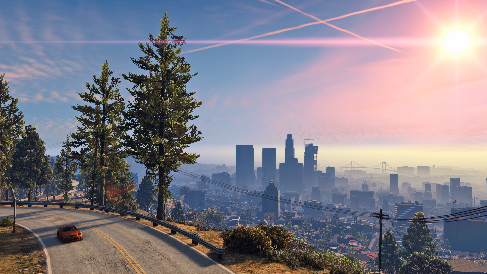
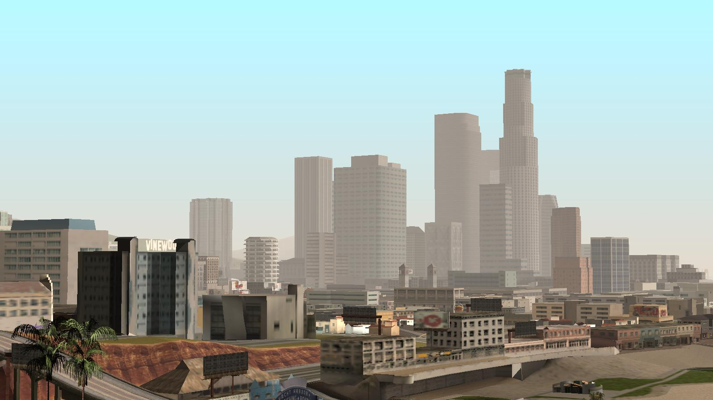

Grand Theft Auto
Screenshot of GTA V.
What is GTA?
Grand Theft Auto (also known as GTA) is an open-world action-adventure video game series developed by many companies, including DMA Design (now known as Rockstar North), Rockstar Canada (now known as Rockstar Toronto), Digital Eclipse (now known as Backbone Entertainment), Rockstar Leeds. The games are published by Rockstar Games. Every game in the series features a main character who goes from being a lowly thief to the leader of a major crime organization. The protagonist completes missions given by many different kinds of characters, but can choose to complete side missions and other miscellaneous tasks such as taxi driving and racing, or just explore the game world. The player can choose to complete missions in whatever order they want. Almost all the games in the series take place in fictional settings, based on real locations in the United States. Notable features of the series include the ability to steal cars and the freedom to explore an open world.
Success of GTA
The Grand Theft Auto series is one of the most popular video game series in the world, as it has sold 250 million copies, with GTA V accounting for 36% of sales. It is only behind Mario, Pokémon, and Tetris in terms of commercial success. An important factor in the series' success is the fact that it is compatible on a wide variety of consoles and devices, ranging from the PlayStation 4 to the iPhone. The series also has a massive and loyal fanbase, one of the largest of any video game series. Another key factor in the series' success is its interesting storylines, very detailed game world, and relatable characters.
GTA Universes
The GTA Series is comprised of 16 titles, which can be sorted into three universes. The graphics of a game and the storyline affect which universe the game belongs to. As of 2018, there are 3 universes: the 2D Universe, 3D Universe, and HD Universe. The universes do not share a common storyline, and locations featured in multiple universes are depicted very differently. For example, the city of Los Santos is featured in GTA: San Andreas (a 3D Universe game), and GTA V (an HD Universe game). While it is found in both games, the two renditions look nothing like each other.
Controversy
While hugely successful, GTA is a highly controversial video game series and is criticized for being violent, racist, sexist, and inappropriate, especially for younger audiences such as children. In one instance, after a sexually explicit unofficial modification was released for GTA: San Andreas, the game was taken off shelves and patched before it was re-released. The issue was so serious that a class action lawsuit was filed against Take-Two Interactive, the parent company of Rockstar Games. Take-Two Interactive and Rockstar Games have also been sued by famous people such as actress Lindsay Lohan.
About Rockstar Games

Rockstar Games is a popular video game publisher, known for series such as Grand Theft Auto, Midnight Club, and Manhunt. Its standalone games are also well-known, including titles like Bully and L.A. Noire. Rockstar Games is located in New York City.
Rockstar Games Official Website
Click here to go to the official website of Rockstar Games.
GTA Titles in Order of Release Date (including DLC's)
- GTA (1)
- GTA: London 1969 (DLC)
- GTA: London 1961 (DLC)
- GTA 2
- GTA III
- GTA: Vice City
- GTA Advance
- GTA: San Andreas
- GTA: Liberty City Stories
- GTA: Vice City Stories
- GTA IV
- GTA: The Lost and Damned (DLC)
- GTA: The Ballad of Gay Tony (DLC)
- GTA: Chinatown Wars
- GTA V
- GTA Online (multiplayer)
Important Locations in the GTA Universe
A view of Los Santos in the 3D Universe.
- Anywhere City
- London, UK
- Liberty City
- Vice City
- State of San Andreas
More Information about GTA
| Game | Year Released | Set In | Protagonist(s) | Setting(s) | Platform(s) |
|---|---|---|---|---|---|
| GTA (1) | 1997 | 1997 | Player's choice (24 available protagonists) | Liberty City, Vice City, San Andreas | PC, PlayStation, Game Boy Colour |
| GTA: London 1969 (DLC) | 1999 | 1969 | Player's choice (8 available protagonists) | London | PC, PlayStation |
| GTA: London 1961 (DLC) | 1999 | 1961 | Player's choice (8 available protagonists) | London | PC |
| GTA 2 | 1999 | 2013 (unconfirmed) | Claude Speed | Anywhere City | PC, PlayStation, Sega Dreamcast, Game Boy Colour |
| GTA III | 2001 | 2001 | Claude | Liberty City | PC, PlayStation 2, Xbox, iOS, Android |
| GTA: Vice City | 2002 | 1986 | Tommy Vercetti | Vice City | PC, PlayStation 2, Xbox, iOS, Android |
| GTA: San Andreas | 2004 | 1992 | Carl Johnson | San Andreas | PC, PlayStation 2, PlayStation 3, Xbox, Xbox 360, iOS, Android |
| GTA: Liberty City Stories | 2005 | 1998 | Toni Cipriani | Liberty City | PlayStation 2, PlayStation Portable, iOS, Android |
| GTA: Vice City Stories | 2006 | 1984 | Victor Vance | Vice City | PlayStation 2, PlayStation Portable |
| GTA IV | 2008 | 2008 | Niko Bellic | Liberty City | PC, PlayStation 3, Xbox 360 |
| GTA: The Lost and Damned (DLC) | 2009 | 2008 | Johnny Klebitz | Liberty City | PC, PlayStation 3, Xbox 260 |
| GTA: The Ballad of Gay Tony (DLC) | 2009 | 2008 | Luis Fernando Lopez | Liberty City | PC, PlayStation 3, Xbox 360 |
| GTA: Chinatown Wars | 2009 | 2009 | Huang Lee | Liberty City | Nintendo DS, PlayStation Portable, iOS, Android |
| GTA V | 2013 | 2013 | Michael De Santa, Franklin Clinton, Trevor Philips | San Andreas | PC, PlayStation 3, PlayStation 4, Xbox 360, Xbox One |
| GTA Online (Multiplayer) | 2013 | 2013 | GTA Online Protagonist (customizable) | San Andreas | PC, PlayStation 3, PlayStation 4, Xbox 360, Xbox One |
©2018 Andrew Yang